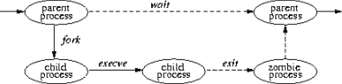

|
|
Основни характеристики на UNIX. Представяне на
типично UNIX ядро.
Част І. Дизайн и имплементация на 4.4BSD
Тома Борисов |
Въведение
Поради голямата си популярност UNIX е може би
една от най-интересните теми за обсъждане. Много
от UNIX SO са free или open source, а това ги прави крайно
удобни за развитие от страна на голям кръг
разработчици. Честото клониране при тях е
обичайно явление.
Мислех си каква да е първата тема в тази рубрика.
Имах много възможности; на първо място можеше да
се пише за Linux. Това до някъде изглежда оправдано.
Linux е определено най-бързо развиващата се OS сред
UNIX клонингите. За нея е написано много, така че
нямаше да е трудно да намеря необходимите
материали, освен това опитът ми с нея е много
по-голям отколкото с другите UNIX системи. От друга
страна именно тази популярност както и факта, че
Linux е UNIX-like а не 100% UNIX ме възпря да започна с него.
Трябваше да намеря истински UNIX за когото да пиша.
Това логично трябваше да бъде или Sun Solaris или BSD.
Заради скромния ми опит със Solaris и липсата на
инсталирана версия под ръка факта че се
разпространява под по-стриктен лиценз, реших да
не се занимавам с него за сега. Остана разбира се
BSD. Тя има Open Source варианти, които дават възможност
да се реализират редица мрежови проекти при това
на най-високо ниво. Така, че инсталирах FreeBSD 4.2 и
започнах да е занимавам с него. BSD е един от
най-разпространените UNIX. На базата на него са
изградени много OS като FreeBSD, OpenBSD, BSDi, NetBSD, а на
последно време и не толкова типични UNIX OS като BeOS и
MacOS X.
Първата тема ще е за ядрото на BSD. Тук ще се
занимаваме с някои системни особености и ще се
даде описание на основните му характеристики.
Поради обемистия материал този въпрос ще се
разгледа в няколко статии - четири по мои
преценки. На някои това може да се стори скучно,
но целта на материала е да се събере информация
за същността на операционната система. Имам идея
да направя подобно проучване и за Linux, като се
надявам това да послужи за добра база за
сравнение между UNIX системите.
Нямам намерение да давам описание относно
ползването на UNIX като цяло, а ще се концентрирам
върху оптимизирането им и някои въпроси за
сигурността. Разбира се ще оценя препоръки към
темата и дори бих окуражил изпращането на
материали от ваша страна, които да бъдат
публикувани в тази рубрика.
История на UNIX
Началото на операционната система UNIX се
поставя от CTSS, обширна система с поделяне по
време, разработена от Ф. Корбато в Масачузетския
технологичен институт в началото на 60-те.
Разбирайки предимствата на
многопотребителските многозадачни системи GENERAL
ELECTRIC, AT&T BELL LABS и MIT започват проект въз основата
на операционната система GE635 наречен MULTICS. Поради
закъсняване на проекта AT&T изтегля част от
персонала си към други проекти. През късната
пролет и ранното лято на 1969 Руд Канадей, Дъг
Макилрой, Денис Ритчи и Кен Томпсън започват
обсъждане по въпроса какво може да се спаси от
идеите на MULTICS. През август Томсън написва
операционна система, шел, редактор и асемблер,
отделяйки за всяко по една седмица. Питър Нюман
нарича новата операционна система UNICS. Не е ясно
как се е стигнало до UNIX.
От 1970 до 1972 системата се подобрява и се добавят
много нов възможности. UNIX остава ограничена само
до лабораториите на AT&T, докато не я инсталират
в телефонния отдел в Манхатън. През следващата
година все нови и нови членове на компютърната
общност чуват за UNIX и питат за нея. В AT&T се чудят
какво да правят. Те немогат да включат в бизнеса
нещо различно от телефония и телеграфия, така че
решават да дадат UNIX на нормална цена на
университетските изследователски центрове при
следните условия: без реклами, без поддръжка, без
коригиране на грешките и с плащане в аванс. В
резултат на това общността на потребителите на
UNIX се увеличава. Използването й расте въпреки
липсата на поддръжка от страна на AT&T.
Тъй като системата постоянно се променя версиите
се именуват според ръководствата за програмисти,
издавани от Ричи и Томпсън - Първа редакция 1971,
Втора редакция 1972...
През октомври 1973 се изготвя Четвърта редакция на
UNIX. Тъй като системата е леснодостъпна и AT&T не я
поддържат, потребителите на системата се
обединяват и започват сами да си помагат, а някои
от тях се заемат сами да добавят нови функции.
Университета Бъркли в Калифорния е мястото с
най-голяма активност в тези разработки.
В началото на 1978 има големи заявки за
разработките на Бъркли и те започват да се
дистрибутират. Първата лента съдържа система
Паскал за UNIX и текстов редактор ex. Преди края
на 1978 е пусната втората версия - 2BSD. В това време Interactive
Systems пуска първата комерсиална версия на UNIX, а
Whitesmiths - първия клонинг Idris.
Седма версия (1979) на UNIX е сред най-важните. Тя е
първата преносима операционна система и съдържа awk,
make, uucp. Но производителността е по-слаба в
сравнение с предходната версия. Потребителският
вариант се появява през 1982 под името 2.8.1BSD.
Последната версия е 4.4BSD от 1993. BSD вече се поддържа
от BSDI (след съдебен процес).
AT&T се опитват да създадат унификация на UNIX
системите: тяхната System V и BSD версията на Бъркли. В
резултат на това се получава System V Release 4, която
комбинира и двете системи. Тя става основа за
разработената от Sun SunOS, 4.x BSD версиите на която е
преименувана на Solaris. Освен System V Release 4
производителите създават още един стандарт
наречен POSIX, характеризиращ основните черти
които трябва да носи една UNIX система. Той е
отворен стандарт и дори WinNT отговаря на някои от
изискванията. Най-интересният от всички UNIX
клонове е Linux. Той е създаден от Линус Торвалдс
през 1991. За историята на Linux сте се спрем подробно
в други статии.
Ядрото
Ядрото е час от системата, което се изпълнява в
защитен режим и осигурява връзката на
потребителските програми с прилежащия хардуер
както и с другите софтуерни съставляващи
(файлова система, мрежови протоколи). Ядрото
предоставя също и основните функционалности;
създава и управлява процесите, предоставя
функции за достъп до файловата система и
средствата за комуникация. Тези функции се
наричат system calls и са достъпни на потребителските
процеси под формата на библиотечни процедури и
функции. Тези system calls са единствения интерфейс
към функционалностите на ядрото. Kernel в
традиционната терминология на операционните
системи е малко ядро от софтуер, който предоставя
само функционалност, необходимата за
имплементацията на допълнителното софтуерно
обкръжение. Така например достъп до файлова
система и мрежовите функции се изпълняват като
допълнителни услуги.
4.4BSD ядрото не е разделено на различни процеси,
както е било в ранните UNIX версии. Ранните kernels са
малки и при включването на услуги като мрежова
поддръжка се увелича ват размерите им.
Съвременната тенденция при OS е да запази малкия
размер на ядрото като тези услуги са изпълнени
като отделни приложения. За тази версия обаче е
бил избран монолитен kernel за производителност и
лекота при проектиране.
Организация на ядрото
Най-голяма част от ядрото е имплементация на
системните функционалности до които
приложенията имат достъп през system calls. В 4.4BSD
кодът е разделен условно на следните части:
- Основна функционалност на ядрото: таймер и
управление на системния часовник, управление на
дескриптора и системни процеси;
- Управление на паметта: paging и swapping;
- Основни системни интерфейси: I/O, управление;
- Файлова система: файлове, директории,
заключване на файл, определяне на пътищата до
файл, управление на I/O буфера;
- Поддръжка на терминали: драйвери за терминални
устройства;
- Поддръжка на мрежова комуникация: протоколи и
основни мрежови функционалности като routing.
По-голямата част (80.4% или 162 617 реда код) то ядрото
е машинно независим код и е приложим при различни
платформи.
Машинно зависимият код е изолиран от главния
сорс на ядрото, тоест никоя част от машинно
независимия код няма зависимост от какъвто и да е
машинно зависим код. Частите, които са машинно
зависими са съответно:
- Стартов процес на ниско ниво;
- Управление на прихващанията и грешките;
- Управление на ниско ниво на изпълнимото
съдържание на процес;
- Конфигуриране и инициализиране на хардуера;
- Изпълнима поддръжка за I/O.
Може да се отбележи, че кодът писан на асемблер
е под 2% от целия, останалата част е писана на C.
Само малка част от ядрото е предназначена за
инициализация на системата. Този код е отговорен
за първоначалното зареждане и за настройките на
хардуерната и софтуерната сред на ядрото. Някои
операционни системи (тези с ограничени ресурси)
игнорират или свалят от паметта кода изпълняващ
тези функции след като се изпълнят. 4.4BSD не взема
паметта на тези програми, защото те
представляват едва 0.5% от общото системно
натоварване на нормална машина. Освен това
стартовият код не се намира само на едно място в
ядрото, а е разпръснат.
Услугите в ядрото
Границата между ядрото и потребителските
програми се налага от защитения режим на
прилежащия хардуер. Ядрото оперира в отделно
адресно поле, недостъпно за потребителските
процеси. Привилегировани операции като
започването на I/O или изключването на процесора
са достъпни само за ядрото. Процесите изискват
услуги от ядрото чрез system calls. Тези заявки са
механизмът чрез който потребителските процеси
изискват от ядрото извършване на сложни операции
като запис върху носител или прости операции
като връщането на текущото време. Всички заявки
изглеждат синхронни за приложението. То не се
изпълнява докато действието свързано с system call
се изпълнява. Ядрото може да свърши с
изпълнението на някои операции, свързани с
заявката и след като се е възстановил от system call.
Например при заявка за запис ядрото копира
нужната информация в буфера си, но се
възстановява преди да е приключил записът от
буфера на носителя.
System call обикновено се изпълнява като
хардуерно прихващане, които променя режима на
изпълнение на процесора и адресирането на
паметта. Параметрите, предавани от програмите
чрез system calls се проверяват от ядрото преди да
се изпълнят. Такава проверка осигурява цялостта
на системата. Всички параметри се копират в
адресното пространство на ядрото, за да се
гарантира че валидираните параметри не се
променят в резултат на странични ефекти,
породени от изпълнението на system call.
Резултатите от заявките се връщат от кернела във
вид на хардуерни регистри или чрез копиране на
техните стойности в оказан от потребителския
процес адрес. Също както параметрите, кака и
върнатите адреси и резултати се валидират за да
се установи тяхната принадлежност към адресното
пространство на процеса. Ако се установи грешка
по време на изпълнение на system call, ядрото
връща код за грешка на потребителя.
Потребителските приложения и ядрото оперират
независимо едни от други. 4.4BSD не съхранява I/O
контролни блокове или друга информация, свързана
с OS, в потребителското адресно пространство.
Всеки потребителски процес има собствено
адресно пространство в което се изпълнява.
Управление на процесите
4.4BSD поддържа многозадачна среда. Всяка задача
или тред от изпълнения се нарича процес.
Контекста на процес се състои от потребителско
ниво, включващ съдържанието на неговото адресно
поле и средата за изпълнение, както и от
кернелско ниво, което включва параметри на
планирането, контроли на ресурсите и
идентификационна информация. Контекста на
процес включва всичко използвано от ядрото при
доставяне на необходимите му услуги.
Потребителят може да изпълнява процес, да
контролира неговото състояние по време на
изпълнение и да получава информация за статуса
по време на изпълнението. На всеки процес се
присвоява уникална стойност, наречена
идентификатор на процеса (PID). Тази стойност се
използва от ядрото за да идентифицира процес
когато докладва неговото състояние на
потребителя или от потребителя, когато той
изпраща system call чрез ядрото към процеса.
Ядрото създава процес като дупликира контекста
от друг процес. Новият процес се нарича child process
на оригинала, който от своя страна се нарича parent
process. Контекста дуплициран при създаването на
процес включва както потребителското състояние
на изпълнение, така и системното положение на
процеса управляван от ядрото.

На горната фигура е показан живота на един
процес. Процес създава свой child процес чрез fork
system call. Той връща две стойности - съответно в
родителският процес връща PID на child процеса,
а на child процеса връща 0. Отношенията между
child и parent процес са строго йерархични. Новият
процес поделя всички ресурси на създалият го
процес като файлови дескриптори, статус на
сигналите и разположение в паметта.
Въпреки това има случаи, когато новият процес не
е просто копие на родителят, а се зарежда и
изпълнява друг код. Процес може да препокрие
своето адресно поле с адресно поле на друга
програма, като подава на новосъздаденото копие
набор от параметри, като се използва system call execve.
Един от параметрите е името на файл във формат,
разбираем за системата - бинарен изпълним файл
или файл, който предизвиква изпълнението на
специфична програма, която интерпретира
неговото съдържание (скрипт).
Процес може да бъде терминиран чрез изпълнението
на exit system call, като при това се изпраща 8-битов
изходен статус на родителя. Ако процес иска да
предаде повече от един байт информация с
родителя си, то той трябва или да премине в режим
на междупроцесна комуникация или да използва
файл посредник.
Процес може да преустанови временно своето
изпълнение докато някой от неговите child
процеси не се терминира и не върне своя PID и
изходен статус, като се използва wait system call.
Родителски процес може да се настрои да бъде
информиран, когато някой от неговите подпроцеси
е терминиран ненормално или излезе. Това се
постига чрез wait4 system call като по този начин
родителския процес получава информация за
статуса с който излиза подпроцеса. Процесите се
подреждат за изпълнение в зависимост от техните
параметри на приоритета. Тези приоритети се
управляват от кернелски алгоритми за планиране.
Потребителите могат да влияят на приоритетите
като подават параметри nice които изменят
глобалните приоритети, но все пак трябва да се
съобразяват със наличните процесорни ресурси в
зависимост от политиката на планиране на ниво
ядро.
Сигнали
Системата определя набор от сигнали, които може
да се подават на процес. Сигналите в 4.4BSD се
моделират след хардуерно прекъсване.. Когато
сигнал се генерира той се блокира от понататъшно
появяване докато не бъде обработен (caught).
Стандартното действие на сигнал е да прекрати
процеса, като в някои случаи това е съпроводено с
създаването на core files, които съдържат копие
на адресното пространство на процеса.
Обработката на сигнала може да не е задължителна.
Той може да се игнорира.
Някои сигнали неможе да се игнорират. Това са SIGKILL
който прекратява текущия процес и SIGSTOP който
регулира работата на процеса.
Всички сигнали са с еднакъв приоритет. Когато те
възникват едновременно обработката им зависи от
конкретната имплементация. Има специални
механизми които предпазват критични части от
кода от получаването на някои сигнали. Групи от
процеси и сесии. За да се осигури контрол над
много зависими процеси се създават групи от
процеси - process groups. Групирането на процеси води до
улеснено изпращане на сигнали до много процеси,
както и до контролира достъпа до терминали. Има
методи чрез които да се промени текущата група.
Създаването на нова група е лесно; стойността на
новата група е обикновено идентификатора на
създавания процес.
#ps acux
USER
root
root
root
root
root
root
root
root
root
root
root
root
root
root
root
root
root
root
usera
root |
PID
306
1
2
3
4
5
29
108
129
132
136
189
192
193
194
195
196
268
270
0 |
%CPU
0.0
0.0
0.0
0.0
0.0
0.0
0.0
0.0
0.0
0.0
0.0
0.0
0.0
0.0
0.0
0.0
0.0
0.0
0.0
0.0 |
%MEM
0.1
0.0
0.0
0.0
0.0
0.0
0.0
0.2
0.3
0.7
0.6
0.3
0.2
0.2
0.2
0.2
0.2
0.4
0.3
0.0 |
VSZ
08
528
0
0
0
0
208
916
952
2496
2404
1336
924
924
924
924
924
1336
1012
0 |
RSS
240
296
0
0
0
0
92
616
704
1904
1436
896
616
616
616
616
616
940
860
0 |
TT
v1
??
??
??
??
??
??
??
??
??
??
v0
v3
v4
v5
v6
v7
v1
v2
?? |
STAT
R+
ILs
DL
DL
DL
DL
Is
Is
Is
Is
Is+
Is+
Is+
Is+
Is+
Is+
Is+
Ss
Is+
DLs |
STARTED
4:32PM
5:50PM
5:50PM
5:50PM
5:50PM
5:50PM
5:50PM
3:50PM
3:50PM
3:50PM
3:50PM
3:50PM
3:50PM
3:50PM
3:50PM
3:50PM
3:50PM
4:13PM
4:14PM
5:50PM |
TIME
0:00.00
0:00.00
0:00.00
0:00.00
0:00.00
0:00.04
0:00.00
0:00.05
0:00.01
0:00.02
0:00.28
0:00.06
0:00.01
0:00.01
0:00.01
0:00.01
0:00.01
0:00.08
0:00.03
0:00.00 |
COMMAND
ps
init
pagedaemon
vmdaedom
bufdaemon
syncer
adjkerntz
syslogd
cron
sendmail
sshd
csh
getty
getty
getty
getty
getty
csh
bash
swapper |
изход от изпълнение на ps
с форматиращи параметри
Групите от процеси понякога се определят
като работа job и се поддържа от програми от
високо ниво като шела. Терминалите имат
присвоени идентификатори на групи процеси. Той
обикновено е еднакъв с групата процеси
асоциирани с терминала. Шел, контролиращ
задачите може да създаде групи процеси
асоциирани с определен терминал, тогава
терминала става контролиращия терминал на всеки
процес в групите. Процес може да чете от
дескриптора на терминал само ако
идентификаторът му съвпада с този на
идентификатора на терминала, ако не на процеса се
забранява да чете от терминала. Като се променя
идентификатора на групата, терминала може да
общува с различни задачи.
Също както процесите се групират в групи от
процеси, така и групите от процеси се групират в
сесии (session). Главното приложение на сесиите
е да се създаде изолирана среда за демонни
процеси и техните наследници и да събира логин
шела на потребителя и задачите, които той
създава.
Заключение
С това приключваме за тази част от
разглеждането на ядрото. До сега се занимавахме
само с процесите и въпроси, свързани с
организацията на ядрото. В следващите статии ще
разгледаме въпроса за връзките на процесите с
другите ресурси и между самите тях. |